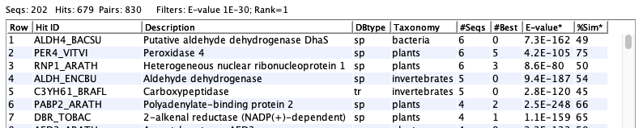

To prepare for annotation with runSingleTCW, it is necessary
to download the databases to compared against. TCW provides support
for downloading the taxonomic and full UniProts
along with mapping from the UniProt IDs to GO, KEGG, Pfam, EC, and InterPro.
Tested:
runAS has been tested on Linux, MacOS 10.9 and 10.15.
If you have any problems, please let me know at tcw at agcol.arizona.edu.
Contents:
Terminology:
The term "AnnoDB" refers to any database that will be used for annotation,
i.e. the sequences in TCW will be searched against all AnnoDB databases and the hits stored
in the single TCW database (sTCWdb) for query.
Requirements:
For mySQL, the command mysqladmin is used, so
you may need to define its path, e.g. on Mac,
alias mysqladmin '/usr/local/mysql/bin/mysqladmin' #tcsh
alias mysqladmin='/usr/local/mysql/bin/mysqladmin' #bash
With MySQL and MariaDB, you may need to set following MySQL variable in order to add the GO database:
SET GLOBAL local_infile = 1;
RunAS uses curl for downloading annoDBs and the GO database.
You can get curl on most Linux machines with 'sudo yum install curl', and MacOS comes with it.
If you cannot install it, runAS will prompt you as shown on
the right; if you select Continue, it will perform the download with its own Java code,
though it may take longer and is not as robust, i.e. could have potential problems due to network latency, etc.

| |
Processing steps: The TCW runAS will perform the following:
- Create the directory under projects/DBfasta for the downloads and generated FASTA files.
- Download the selected Taxonomic UniProts ".dat" files and create FASTA files.
- Download the selected full UniProt, remove entries from taxonomic databases, and create a FASTA file of the remaining sequences.
- Create GO database, which contains mappings from UniProt IDs to GO, KEGG, EC, Pfam and InterPro.
- Download go_<date>-termdb-tables.tar.gz.cfg.
- Create a local mySQL GO database with the information from this tar file.
- Add information to the local GO database from the .fasta and .dat files in the UniProt directory.
- Create the file projects/AnnoDBs_UniProt_<date>.cfg to be imported to
runSingleTCW.
Important:
| Time and Memory | This can take a lot of time and memory, so make sure to read this section.
|
| What AnnoDBs to use | To reduce the time and memory, make sure to read this section.
|
| Using other databases | Other databases, such as NCBI nr, can be used for annotation
but they will not have GO, KEGG, EC, Pfam, or InterPro.
|
The TCW package provides subsets of UniProt for annotating the demo.
In order to add GO annotations, a local GO mySQL 'demo' database needs to be created.
- From the TCW_3 directory, execute:
./runAS -d
The "-d" will cause it to enter the demo parameters, as shown on the right.
The highlighted entries already exist. Its only necessary to build the GO database.
- Execute Build GO.
The GO tables are available for the demo, i.e. they will not be downloaded. This is evident from the purple GO label.
Building the GO database takes approximately 5-10 minutes.
| 
|
Details about the Demo setup
In the projects/DBfasta directory, there is the sub-directory UniProt_demo and GO_tmpdemo,
which contains the following:
GO_tmpdemo:
go_daily-termdb-tables.tar.gz
UniProt_demo:
sp_bacteria/ sp_fungi/ sp_plants/ tr_plants/
sp_fullSubset/ sp_invertebrates/ tr_invertebrates/
Each taxonomic directory has a .dat and a .fasta file,
which are very small subsets of the original UniProt taxonomic .dat file.
Typically, all you need to do is make sure you have an internet connection open
and that you have enough disk space (see Memory),
then:
- The "TCW Annotation Directories" define where the files will be put.
TCW provides defaults as shown on the right; it is recommended you use the defaults.
- Select the taxonomic databases you want to use, then select Build Tax,
which downloads the respective files and creates FASTA files.
- Select the full databases you want to use, then select Build Full,
which downloads the respective files, creates a subset of the full by removing
all entries found in the downloaded taxonomic databases, and creates a FASTA file.
- Select Build GO, which downloads the GO database,
creates a local mySQL GO database with a mapping of the UniProts from your downloaded
set. This uses the information in HOSTS.cfg.
- Select AnnoDB.cfg, which writes a file called projects/AnnoDBs_UniProt_<date>.cfg
that contains all the information downloaded; this can be used as input to
runSingleTCW
(see Import AnnoDBs).
- Check: Selecting this button highlights everything that has been done.
For example, the figure on the upper right shows that the directory
UniProt_Jan2021 has been created and only Archaea and Virus SwissProt have been downloaded and processed.
The Check automatically runs on startup.
| 
|
Important points:
runAS will not replace an existing downloaded file: It will overwrite
a .fasta file, but never a .dat file. If you want a .dat file downloaded again, you must remove it yourself.
- Recreate: If you add taxonomic database(s) after creating the respective Full Uniprot
and/or GO database, you must recreate both of these.
- GO db: It is important that you create the GO database right after downloading the UniProt files
so that they correspond.
- Only download what you need!
See Memory and Time and What AnnoDBs to use.
Check:
Select to update the highlighting, as discussed below.
Check is automatically run on startup, and when any of the three "Builds" are executed.
Label Highlights
- If the UniProt directory is highlighted in blue, it exists.
- If the GO directory is highlighted in pink, it exists but the GO tables have not
been downloaded.
If it is highlighted in blue, the GO tables have been downloaded.
- If the Database is highlighted in blue, the GO database exists.
Taxonomic and Full UniProt Highlights
Clear checkbox: If a taxonomic or full checkbox is clear, then neither the .dat file or .fasta file exists for it.
When you check the box followed by "Build Tax", you will need to confirm a popup
that states "Download SP - xxx", where xxx will be
the list of files to download. The download is always automatically followed by creating the .fasta file.
Pink checkbox: If the .dat file exists, but the .fasta file does not, the checkbox will be highlighted pink.
Check the pink box(s) and run "Build Tax" in order to create the
.fasta file. You will need to confirm a pop-up that states
"Create SP Fasta - xxx", where xxx is the taxonomic groups that will be created. Since
the .fasta file is automatically created after download, this will not happen unless there is a problem
such as the disk being full.
Blue checkbox: If both the .dat file and the .fasta file exists, the check box will be highlighted blue.
| If you downloaded some taxonomic databases, created the SP Full database, then downloaded another
taxonomic database, you will need to recreate the SP Full database. Check the SwissProt box,
and run "Build Full" again. You will get a pop-up to confirm as shown on the right.
| 
|
File Structure
For each taxonomic and full UniProt that you downloaded, a directory will be created
under the "UniProt" directory. For example,
./TCW/projects/DBfasta/UniProt_Jan2021% ls *
sp_archaea:
uniprot_sprot_archaea.dat.gz uniprot_sprot_archaea.fasta.gz
sp_fullSubset:
uniprot_sprot.dat.gz uniprot_sprot_fullSubset.fasta uniprot_sprot_fullSubset.dat.gz
sp_viruses:
uniprot_sprot_viruses.dat.gz uniprot_sprot_viruses.fasta.gz
Note that the sp_fullSubset directory has TWO .dat files, the second one (uniprot_sprot_fullSubset.dat.gz)
was created with the Taxonomic entries removed and corresponds to the .fasta file
When you run the BLAST or DIAMOND search programs from runSingleTCW,
the formatted files will be placed in the corresponding directory.
Compress Fasta: If you plan on using DIAMOND as the search program,
you may compress the fasta files after download, e.g.
cd projects/DBfasta/UniProt_<date>
gzip */*.fasta
GO (Gene Ontology)
A tar file containing the schema and data is downloaded
from http://archive.geneontology.org/.
The most current file is go_daily-termdb-tables.tar.gz
Database: This text entry on the runAS interface is the name
of the GO MySQL database that will be created; you will enter
this name in runSingleTCW.
The processing steps are as follows:
- Download the GO tar file to GO directory and untar it.
- Create the GO database and load the schema from the GO directory.
- Modify the GO database as follows: loads the UniProt IDs with GOs from the UniProt .dat files
that exist under the specified UniProt directory, and creates the GO-UniProt mapping.
- This uses the mySQL userid and password from the HOSTS.cfg file.
Other details
Log file: A log of the processing is written to projects/DBfasta/logs/runAS.log.
See the log file for an example.
runMultitCW: If multiple sTCWdbs are to be compared using multiTCW,
it is important they all use the same set of AnnoDBs and GO database. The runSingleTCW
"Import AnnoDBs" feature is a convenient to ensure the usage of the same AnnoDBs for all relevant sTCWdbs.
runAS does not remove files that are no longer necessary, which are
the files downloaded from the internet:
- All "dat.gz" files in the UniProt directories, as the information has
been transferred to the FASTA files and GO database.
- The GO directory, as the information has been transferred to the GO database.
These files can be removed, as runSingleTCW
uses the FASTA files in the UniProt directories and the GO mySQL database. However, if you
do not have a space problem, keep them just for insurance;
when UniProt does the monthly update, your downloaded files will no be longer available
on their site.
For the FASTA files that you will be using
DIAMOND to search against, you
can gzip them as DIAMOND can search against gzipped files.
When your calculating space, remember that the BLAST and DIAMOND programs
will format the .fasta file, which takes up even more space. For example:
/TCW/projects/DBfasta/UniProt_Jan2021/sp_fullSubset% ls -hlG
total 3408080
-rw-r--r-- 1 cari staff 582M Jan 26 07:07 uniprot_sprot.dat.gz
-rw-r--r-- 1 cari staff 550M Jan 26 09:24 uniprot_sprot_fullSubset.dat.gz
-rw-r--r-- 1 cari staff 250M Jan 26 09:24 uniprot_sprot_fullSubset.fasta
-rw-r--r-- 1 cari staff 255M Jan 26 07:41 uniprot_sprot_fullSubset.fasta.dmnd
Taxonomic
Downloads on 24-Jan-2021 onto a Linux machine with a ~500 Mbsp download connection and 128Gb of RAM.
| File | .dat Size | Download | FASTA Size1 | Creation
|
|---|
| uniprot_sprot_bacteria.dat.gz | 203M | 1m:10s | 150Mb | 0m:24s
|
| uniprot_sprot_fungi.dat.gz | 49M | 0m:8s | 21M | 0m:4s
|
| uniprot_sprot_invertebrates.dat.gz | 33M | 0m:12s | 14M | 0m:2s
|
| uniprot_sprot_plants.dat.gz | 50M | 0m:14s | 21M | 0m:5s
|
| uniprot_sprot_viruses.dat.gz | 16M | 0m:3s | 9M | 0m:1s
|
| uniprot_sprot_bacteria.dat.gz | 88G | 6h:36m:40s | 61G | 2h:21m:3s
|
| uniprot_trembl_fungi.dat.gz | 8.1G | 26m:23s | 6.9G | 14m:28s
|
| uniprot_trembl_invertebrates.dat.gz | 7.4G | 32m:5s | 6.1G | 13m:22s
|
| uniprot_trembl_plants.dat.gz | 11G | 28m:43s | 9.2G | 18m:48s
|
| uniprot_trembl_viruses.dat.gz | 3.5G | 13m:35s | 2.1G | 5m:30s
|
1When TCW extracts the sequence into a FASTA file, it is not written in a gzipped format.
However, if you are going to use DIAMOND, you can zip them.
Full UniProt
| File | .dat Size | Download | Subset .dat | FASTA Size | Creation Time
|
|---|
| uniprot_sprot.dat.gz | 583M | 1m:16s | 209M | 55M | 3m:11s
|
| uniprot_trembl.dat.gz | 126G | 7h:3m:10s | 12.9G | 10.3G | 5h:33m:22s
|
GO database
It takes less than a minute to download the GO file..
The time it takes to build the GO database is proportional to the number of UniProts to be processed.
For example,
| Machine | AnnoDBs | Time | Database size
|
|---|
| MacOS Catalina | 3 Archaea, Virus and SwissProt Subset | 6m:30s | 534M
|
| Old Linux | 12 The taxonomic and full listed above | 10h:38m:24s1 | 30G1
|
1Most of the time, 7h:4m:56s, was for loading the tr_bacteria, which would also account for a lot of the database size.
Strong suggestions:
- Only download what is relevant!
- Download all relevant SwissProt files and the Full SwissProt UniProt.
- Download only the most relevant TrEMBL files, and never the Full TrEMBL UniProt unless absolutely necessary.
- Do not perform constant downloads, it is a drain on the UniProt servers.
The UniProts do not change that fast, and it changes 'best' hits in TCW, which can disturb any on-going analysis.
Evidence
The dataset used for the following tests is from de novo assembled sequences from Andropogon gerardii,
which is related to Sorghum. It was downloaded from
Dryad and published by
Hoffman and Smith (2017).
The full dataset had >60k transcripts, which was reduced to 27,085 (it was reduced to be able to run faster tests, though care was taken to
use unannotated sequences from an earlier annotation).
Four annotations were
compared:
| Dataset # | AnnoDBs | #Annotated (%)
|
|---|
| #1 | sp_plants, tr_plants, sp_fullSubset | 25,049 (92.5%)
|
| #2 | #1 + sp_virus, sp_fungi, sp_invertebrate, sp_bacteria | 25,052 (92.5%)
|
| #3 | #2 + tr_virus, tr_fungi, tr_invertebrate, tr_bacteria, tr_fullSubset | 25,070 (92.6%)
|
| #4 | #1 + nr | 25,160 (92.9%)
|
If your organism is not closely related to any model organism, then there will likely be a bigger difference.
Creating AnnoDBs from other databases
| Go to top |
UniProt and NCBI-nr descriptor lines works with TCW. For other databases, you will need to make sure they have a TCW
accepted descriptor line.
Description lines
The description line is the ">" line that describes the subsequent sequence in a FASTA file.
From it, runSingleTCW extracts:
- DB type: used in naming the tab output file and is used in
viewSingleTCW to aid
in identifying where the hitID is from.
- hitID: the unique identifier of the hit.
- description: generally the functional description
- species: the species
UniProt
>sp|Q9V2L2|1A1D_PYRAB Putative 1-ami OS=Pyrococcus abyssi GN=PYRAB00630 PE=3 SV=1v
- For TrEMBL, the first two characters would be 'tr'. The 'sp' or 'tr' are the DB type
- The third entry of the first string is the identifier (e.g. 1A1D_PYRAB)
- The string up to the OS is the description.
- The string after the "OS=" is the species.
NCBI nr (See Download NR)
>XP_642837.1 hypothetical protein DDB_G0276911 [Dictyostelium discoideum AX4]
- The first entry is the identifier (e.g. XP_642837.1).
Note, there is no longer a way to detect the database origin within the file, hence, the DB type will be the generic 'PR' for protein.
- The text from the first space to the first "[" is the description.
- The text within the "[]" is the species.
In 2016, NCBI changed the format, where the old one should still work.
Generic
If you have a file other than UniProt or nr, make the descriptor names as follows:
>CC|ID description OS=species
- CC is the type code, and will be used as the DB type in TCW.
- ID is the unique identifier
- Everything up to the OS is the description
- Everything after the OS is the species
For example, the TCW perl script scripts/formatPlantTFDB.pl takes as input a file from
PlantTFDB, and
reformat the header lines as follows:
>KFK36254.1 Arabis alpina|G2-like|G2-like family protein
Converted to:
>tf|G2_like_1 G2-like family protein {KFK36254.1} OS=Arabis alpina
The type will be tf. If the taxonomy entered into runSingleTCW is plants,
the abbreviation for this database will be tfPla.
Entering AnnoDBs and GOs into runSingleTCW
| Go to top |
Execute ./runSingleTCW and select your project.
- Select Import Anno, a file chooser will popup, select
projects/AnnoDBs_UniProt_<date>.cfg. This will enter the names of the UniProts in AnnoDB, and enter
the name of the GO database (which can be changed with "Options").
- Now you are ready to run Annotate with the UniProt and GO you
just downloaded.

Additionally, AnnoDBs can be entered using the "Add" button, where the taxonomy is defined.
And, the "Import AnnoDBs" can add the databases from an existing sTCW.cfg
file.
The GO database and GO slim category are defined in the "Options" menu.
Why use taxonomic databases instead of the full UniProt
| Go to top |
viewSingleTCW refers to the annoDBs by the 'DBtype' and 'taxonomy', with them combined into 'DBtax'.
The DBtype and taxonomy can be queried on and columns of the data viewed. The "sp" is SwissProt and the "tr" is "Trembl".
The "fullSubset" and "SPful" are the full SwissProt database with the taxonomic entries removed.
The following shows an example of a set of hit proteins:

The following shows a table of sequences:

The following shows the details of a specific sequence:

To download the UniProt files without runAS:
- Go to UniProt Downloads.
- In the second line from the top, it says "For downloading complete data sets we recommend using ftp.uniprot.org."
Click the ftp.uniprot.org.
- This brings up the UniProt download directories in a Finder window. You may view it as "Guest".
- Click "Current_release", "knowledgebase". Here you will see "complete" and "taxonomic_divisions".
The NCBI-nr database can be downloaded:
GO database: http://archive.geneontology.org/